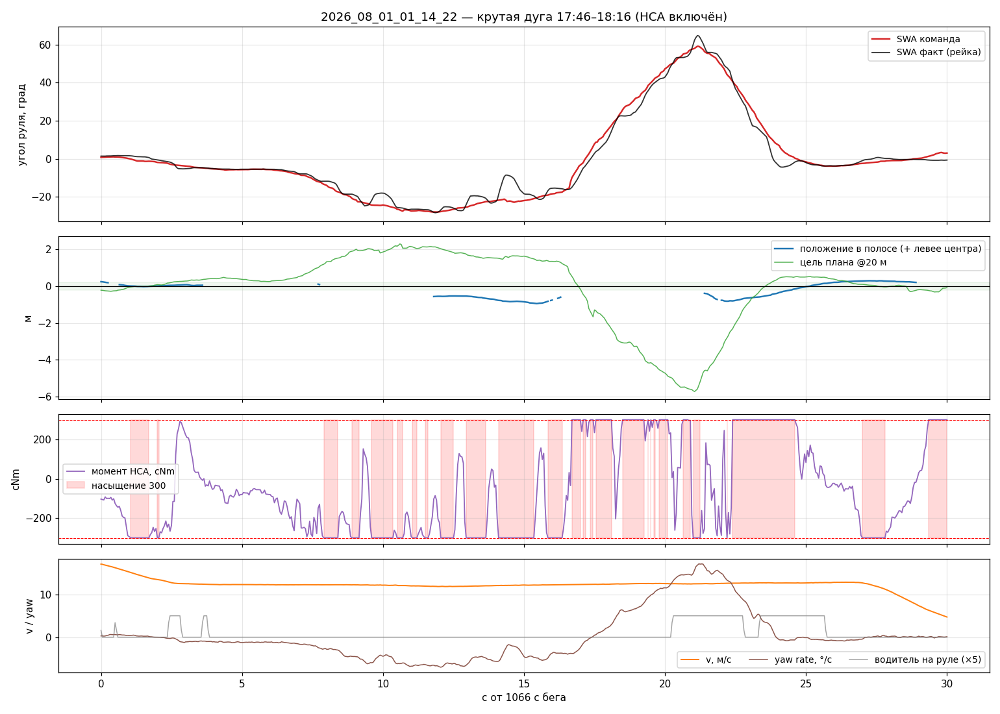

MPC and fp#
Pure Pursuit picks one \(\delta\) that hits a look-ahead point. MPC optimizes a short future trajectory, applies the first command, and re-solves next frame.
|
role |
|---|---|
|
VisionPilot path-MPC (best for learning cost / \(\kappa\)) |
|
stock-like time-domain MPC (road default) |
Appendix with real-arc forensics: docs/MPC_EXPLAINED.md.
VisionPilot
mpc:lateral/lateral_planning.cpp(\(N{=}20\), path-domain \(ds\)).flowpilot
fp:lateral/lateral_mpc.cpp(\(N{=}16\), time grid → 2.5 s).Path fusion (lanes↔plan):
laneLinesToPath/core/path_fusion.py.
State symbols#
symbol |
meaning |
|---|---|
CTE |
lateral offset from lane center [m] |
epsi |
heading error vs path tangent [rad] |
\(\kappa\) |
path curvature [1/m] |
\(\delta\) |
front wheel angle [rad] |
\(L\) |
wheelbase (~2.64–2.67 m) |
Straight: CTE, epsi, \(\kappa\approx 0\) → feedback dominates. Arc: feed-forward from \(\kappa\) dominates. Bad/delayed \(\kappa\) → outward drift.
{kind=link}

Fig. 8 When planner \(\kappa\) lags yaw-derived curvature, SWA undershoots and CTE grows.#
Seven steps (VisionPilot mental model)#
Shared toy constants for every snippet below:
import math
import numpy as np
L = 2.64 # wheelbase [m]
N = 20 # horizon steps
DS = 0.5 # path step [m] (~1 s preview at ~10 m/s)
K_US = 0.0015 # understeer-ish term in VisionPilot ff
FF_SCALE = 2.0
W_DELTA = 45000.0 # pin δ to δ_ff
W_DDELTA = 15000.0
1. Measure CTE, epsi, \(\kappa\)#
Lane markings → lane-center polyline → quadratic \(y = a x^2 + b x + c\) in ego frame. At the vehicle (\(x\approx 0\)):
\(\mathrm{CTE} \approx c\) (lateral offset),
\(\mathrm{epsi} \approx b\) (heading vs path),
\(\kappa \approx 2a\) (curvature of the fit).
If the fit window is short or noisy, \(\kappa\) is low and late — the whole feed-forward chain inherits that error.
def fit_lane_state(x, y):
"""Quadratic fit y≈a x²+b x+c → (CTE, epsi, kappa) at x=0."""
a, b, c = np.polyfit(x, y, 2)
return float(c), float(b), float(2 * a)
# Toy centerline: gentle left arc in device frame (y right+)
x = np.linspace(0, 30, 31)
kappa_true = 0.02
y = 0.5 * kappa_true * x**2 + 0.05 * x + 0.30 # also 30 cm off + slight epsi
cte, epsi, kappa = fit_lane_state(x, y)
print(f"CTE={cte:.3f} m, epsi={math.degrees(epsi):.2f}°, κ={kappa:.4f} 1/m "
f"(true κ={kappa_true})")
You should recover CTE ≈ 0.3 m and \(\kappa\) near 0.02. On a real bag, compare control/lane_keep_debug κ to yaw_rate / v.
2. Predict trajectories for trial \(\delta\)#
VisionPilot rolls along path length, not clock time. For a candidate wheel angle \(\delta\):
Nose cocked relative to the road (\(\mathrm{epsi}\neq 0\)) → CTE integrates.
\(\tan\delta/L\) must match road \(\kappa\), or heading error integrates.
def predict(cte, epsi, kappa, delta, ds=DS, n=N, L=L):
"""Return arrays (cte[0..n], epsi[0..n]) including the start state."""
cs, es = [cte], [epsi]
for _ in range(n):
cte = cte - math.sin(epsi) * ds
epsi = epsi + (kappa - math.tan(delta) / L) * ds
cs.append(cte)
es.append(epsi)
return np.array(cs), np.array(es)
cte0, epsi0, kappa = 0.40, 0.0, 0.02
delta_ff_kin = math.atan(L * kappa)
for name, delta in [("δ=0", 0.0), ("δ=atan(Lκ)", delta_ff_kin)]:
cs, _ = predict(cte0, epsi0, kappa, delta)
print(f"{name:12s} CTE@0={cs[0]:.3f} → CTE@end={cs[-1]:.3f} m")
Wrong \(\delta\) lets CTE grow; geometric \(\delta\) holds better. This is only the predictor — cost picks which \(\delta\) wins.
3. Score with \(J\)#
Lower is better. VisionPilot-style terms (simplified):
Weights grow with \(|\kappa|\) (curve_factor = 1 + 20·κ). The \(W_\delta{=}45000\) term is enormous — so the optimum hugs \(\delta_{\mathrm{ff}}\).
def cost(cte0, epsi0, kappa, deltas, v=15.0,
cte_w_base=20.0, epsi_w_base=10.0, quartic=5.0):
"""Score a sequence of wheel angles (len N)."""
assert len(deltas) == N
v2 = v * v
curve = 1.0 + 20.0 * abs(kappa)
cte_w = cte_w_base * curve
epsi_w = epsi_w_base * curve
cte, epsi = cte0, epsi0
j = 0.0
for s, delta in enumerate(deltas):
j += cte_w * cte**2
j += cte_w * quartic * cte**4
j += epsi_w * epsi**2
delta_ff = FF_SCALE * (math.atan(L * kappa) + K_US * v2 * kappa)
j += W_DELTA * (delta - delta_ff) ** 2
if s > 0:
j += W_DDELTA * min(max(v2, 9.0), 25.0) * (delta - deltas[s - 1]) ** 2
# one predict step
cte = cte - math.sin(epsi) * DS
epsi = epsi + (kappa - math.tan(delta) / L) * DS
return j
kappa = 0.02
delta_ff = FF_SCALE * (math.atan(L * kappa) + K_US * 15**2 * kappa)
for scale in (0.0, 0.5, 1.0, 1.5):
deltas = [scale * delta_ff] * N
j = cost(0.20, 0.0, kappa, deltas)
print(f"δ={math.degrees(scale*delta_ff):5.2f}° J={j:.1f}")
Expect the minimum near scale=1 (\(\delta\approx\delta_{\mathrm{ff}}\)). Set W_DELTA=0 mentally: the ranking can flip toward pure CTE-minimizing \(\delta\).
4. Build \(\delta_{\mathrm{ff}}\)#
Feed-forward is the steering you need even if already centered:
It is linear in \(\kappa\). Underestimate \(\kappa\) → understeer the arc. On a straight \(\kappa\approx 0\) → \(\delta_{\mathrm{ff}}\approx 0\) and feedback carries the car.
def delta_ff(kappa, v, ff_scale=FF_SCALE, L=L, K_us=K_US):
return ff_scale * (math.atan(L * kappa) + K_us * v * v * kappa)
for kappa in (0.0, 0.01, 0.02, 0.03):
d = delta_ff(kappa, v=20.0)
# What if perception returns only 66% of true kappa?
d_bad = delta_ff(0.66 * kappa, v=20.0)
print(f"κ={kappa:.3f} δ_ff={math.degrees(d):5.2f}° "
f"if κ×0.66 → {math.degrees(d_bad):5.2f}°")
5. Solve (warm start + gradient)#
Seed, then finite-difference / gradient steps on the \(\delta\) sequence (C++: ~80 iters). In practice on road bags the descent barely moves the seed — seed quality ≈ output quality.
def warm_start(cte, epsi, kappa, v, k_cte_base=0.6, k_epsi=0.3):
v2 = v * v
k_cte = max(k_cte_base / (1.0 + v2), 0.0)
fb = max(-0.25, min(0.25, k_cte * cte + k_epsi * epsi))
d0 = delta_ff(kappa, v) + fb
return [d0] * N
def solve(cte, epsi, kappa, v, iters=40, step=2e-4):
"""Tiny FD gradient descent on a shared δ (toy; C++ optimizes the sequence)."""
deltas = warm_start(cte, epsi, kappa, v)
best = cost(cte, epsi, kappa, deltas, v=v)
for _ in range(iters):
# one shared angle for the demo
d = deltas[0]
trial_p = [d + step] * N
trial_m = [d - step] * N
jp = cost(cte, epsi, kappa, trial_p, v=v)
jm = cost(cte, epsi, kappa, trial_m, v=v)
grad = (jp - jm) / (2 * step)
d_new = d - 5e-8 * grad # tiny step — cost is stiff in δ
deltas = [d_new] * N
j = cost(cte, epsi, kappa, deltas, v=v)
if j < best:
best = j
else:
deltas = [d] * N
break
return deltas, best
cte, epsi, kappa, v = 0.20, 0.02, 0.02, 18.0
seed = warm_start(cte, epsi, kappa, v)
sol, j = solve(cte, epsi, kappa, v)
print(f"seed {math.degrees(seed[0]):.3f}° → solved {math.degrees(sol[0]):.3f}° J={j:.1f}")
print(f"|Δδ|={abs(math.degrees(sol[0]-seed[0])):.4f}° (often ~0 on road)")
6. Apply first sample → limits → SWA → PID → HCA#
Take a command slightly ahead in the horizon (delay), then clamp:
angle cap growing with speed,
per-frame slew / jerk limit,
\(\delta \times\)
steer_ratio→ steering-wheel angle,angle-PID → torque \(\in[\pm 300]\) cNm →
HCA_01on CAN.
STEER_RATIO = 15.7
def apply_limits(delta_cmd, delta_prev, v, max_slew_deg=8.0):
# soft VisionPilot-ish angle cap [deg]
cap = math.radians(max(8.0, min(25.0, 8.0 + v)))
d = max(-cap, min(cap, delta_cmd))
slew = math.radians(max_slew_deg)
d = max(delta_prev - slew, min(delta_prev + slew, d))
swa = d * STEER_RATIO
return d, swa
delta_plan = sol[1] if len(sol) > 1 else sol[0] # "look ahead" one sample
d_prev = 0.0
d_out, swa = apply_limits(delta_plan, d_prev, v=18.0)
print(f"wheel {math.degrees(d_out):.2f}° SWA {math.degrees(swa):.1f}° "
f"(PID→torque happens in LaneKeepService / PandaService)")
Saturation at ±300 cNm means the plant cannot follow — not that the cost wanted more. Debug flag / UI: steering-limit indication.
7. Repeat next frame#
New vision/lanes (~80–90 ms median on phone) → new CTE/epsi/\(\kappa\) → back to step 1.
MPC does not open-loop the whole second: only the first command is applied, then the plan is thrown away and rebuilt from the measured state.
def one_phone_frame(cte, epsi, kappa, v, delta_prev):
"""Steps 4→6 for one camera frame (measure assumed already done)."""
deltas = warm_start(cte, epsi, kappa, v)
# real code runs gradient; seed≈solution on many bags
d_plan = deltas[1] if len(deltas) > 1 else deltas[0]
d_out, swa = apply_limits(d_plan, delta_prev, v)
return d_out, swa
# Structural MPC loop — new measurement every frame, plan discarded
delta_prev = 0.0
for frame in range(5):
# step 1 would refresh cte, epsi, kappa from vision here
cte, epsi, kappa, v = 0.20, 0.01, 0.02, 18.0
delta_prev, swa = one_phone_frame(cte, epsi, kappa, v, delta_prev)
print(f"frame {frame}: δ={math.degrees(delta_prev):.2f}° SWA={math.degrees(swa):.1f}°")
# Why κ quality matters more than "more MPC iterations"
print("\ncommand vs measured κ (CTE=epsi=0):")
for k_meas in (0.020, 0.013, 0.008): # truth, ×0.66, worse
d = warm_start(0.0, 0.0, k_meas, 20.0)[0]
print(f" κ_meas={k_meas:.3f} → δ_seed={math.degrees(d):.2f}°")
Only the first command is applied; the rest of the horizon is thrown away. If every frame’s \(\kappa\) is low, every seed undershoots — descent cannot invent curvature that step 1 never measured.
Before the controller: lane / plan blending#
Both fp and mpc / pp track a reference polyline on topic vision/path.
That polyline is not raw paint and not raw Supercombo plan — it is a fusion in
laneLinesToPath (topic_convert / Python mirror core/path_fusion.py).
Why fuse?#
source |
strength |
failure mode |
|---|---|---|
Lane lines (near L/R) |
geometric center of the lane you are in |
disappears, σ blows up in arcs / rain |
Model plan ( |
always present, smooth |
systematically cuts inside arcs (setpoint offset) |
Upstream (comma-two) trusts paint when confident (d_prob≈1). We expose the mix as
path_lane_blend_scale (shipped 0.6): even with perfect lines, 40 % of the plan offset remains.
Formula (device frame, \(y\) right+)#
Soft probabilities from near left/right (
lanes[1],lanes[2]), then × σ-confidence (mediany_stdover 5–40 m: full weight if \(\sigma\le\)lane_std_good_m0.3, zero if \(\sigma\ge\)lane_std_bad_m1.5).Require both lines and median width \(\in[2.6, 4.6]\) m → anchored.
Lane mid at each \(x\):
Blend weight (flowpilot-style OR of probs, then scale):
Fuse onto plan points:
If not anchored or blend_scale=0 → plan only.
import numpy as np
def soft_prob(p, min_p=0.3):
if p < min_p:
return 0.0
return min(1.0, (p - min_p) / max(1e-3, 1.0 - min_p))
def std_conf(median_std, good=0.3, bad=1.5):
if median_std < 0:
return 1.0
if median_std <= good:
return 1.0
if median_std >= bad:
return 0.0
return (bad - median_std) / (bad - good)
def blend_reference(x, y_plan, y_L, y_R, p_L, p_R,
std_L=0.2, std_R=0.2, blend_scale=0.6,
w_min=2.6, w_max=4.6):
"""Return fused y(x). All arrays same length; device y right+."""
p_L = soft_prob(p_L) * std_conf(std_L)
p_R = soft_prob(p_R) * std_conf(std_R)
sel = (x >= 5.0) & (x <= 40.0)
w_med = float(np.mean(np.abs(y_R[sel] - y_L[sel]))) if sel.any() else 0.0
anchored = (w_min < w_med < w_max) and p_L > 0 and p_R > 0
d_prob = (p_L + p_R - p_L * p_R) * blend_scale if anchored else 0.0
w = np.clip(np.abs(y_L - y_R), w_min, w_max)
y_lane = (p_L * (y_L + 0.5 * w) + p_R * (y_R - 0.5 * w)) / (p_L + p_R + 1e-6)
y = d_prob * y_lane + (1.0 - d_prob) * y_plan
return y, d_prob, anchored
# Toy: plan cuts 40 cm inside; paint is centered
x = np.linspace(0, 40, 21)
y_plan = -0.40 * (x / 40.0) # drifts to −0.4 m at 40 m
y_L = -1.75 * np.ones_like(x)
y_R = +1.75 * np.ones_like(x)
for scale in (0.0, 0.6, 1.0):
y, d, ok = blend_reference(x, y_plan, y_L, y_R, 0.95, 0.95, blend_scale=scale)
print(f"blend={scale:.1f} anchored={ok} d_prob={d:.2f} "
f"y(0)={y[0]:+.3f} y(40)={y[-1]:+.3f}")
Expect: blend=0 follows the cutting plan; blend=1 sits on lane mid (\(≈0\));
blend=0.6 is in between — shipped phone default.
Knobs
path_lane_blend_scale, lane_std_good_m / lane_std_bad_m, path_camera_offset_m
(constant shift after fusion). Raising blend toward 1.0 helps arcs only if σ stays in the
“good” band — otherwise \(d_{\mathrm{prob}}\to 0\) and you silently ride the plan again.
fp model (flowpilot time-domain MPC)#
Road default (lane_keep_controller=fp). Code: lateral/lateral_mpc.cpp,
wired in LaneKeepService::stepFlowpilot.
Opposite of VisionPilot’s path-domain \(\delta\)-MPC:
VisionPilot |
flowpilot |
|
|---|---|---|
decision variable |
wheel angle \(\delta\) along \(s\) |
yaw-rate rate \(u=\dot r\) in time |
horizon |
\(N{=}20\), \(ds\sim 0.5\) m |
\(N{=}16\), \(t_i=10(i/32)^2\) → \(T_f=2.5\) s |
output |
\(\delta\) |
desired curvature \(\kappa^\star\), then VM → \(\delta\) |
delay |
pick \(\delta_1\) |
|
fp-1. Reference in time#
Polyline is flipped to openpilot left+ (y \leftarrow -y). Sample at distances \(v\cdot t_i\):
Build \(y_{\mathrm{ref}}(t)\), \(\psi_{\mathrm{ref}}(t)\), \(r_{\mathrm{ref}}=\dot\psi_{\mathrm{ref}}\).
If Supercombo orientation heads exist, \(\psi\) / \(r\) come from plan_yaw / plan_yaw_rate.
import numpy as np
N_FP = 16
T_IDX_MAX = 32.0
def t_node(i):
return 10.0 * (i / T_IDX_MAX) ** 2
print("fp time grid [s]:", [round(t_node(i), 3) for i in range(0, N_FP + 1, 4)])
# 0, 0.156, 0.625, 1.406, 2.5
def sample_y_ref(poly_xy, v):
"""poly_xy: Nx2 in left+ frame; return y_ref[0..N]."""
x, y = poly_xy[:, 0], poly_xy[:, 1]
s = np.zeros(len(x))
s[1:] = np.cumsum(np.hypot(np.diff(x), np.diff(y)))
y_ref = []
for i in range(N_FP + 1):
dist = min(v * t_node(i), s[-1])
y_ref.append(float(np.interp(dist, s, y)))
return np.array(y_ref)
# Straight offset 0.25 m left in left+ frame
poly = np.stack([np.linspace(1, 40, 40), 0.25 * np.ones(40)], axis=1)
print("y_ref@v=15:", np.round(sample_y_ref(poly, 15.0)[::4], 3))
fp-2. Dynamics (state)#
State \(x=(X,Y,\psi,r)\), control \(u=\dot r\) (yaw acceleration):
\(R_{\mathrm{rot}}\approx L/2\) in our config. Ego starts at origin; \(r_0\) seeded from path geometry on first call.
def forward_fp(u, v, r0=0.0, R_rot=1.32):
"""u length N; return Y, psi, r trajectories length N+1."""
X = Y = psi = 0.0
r = r0
Ys, psis, rs = [Y], [psi], [r]
for i in range(N_FP):
dt = max(t_node(i + 1) - t_node(i), 1e-4)
X = X + dt * (v * np.cos(psi) - R_rot * np.sin(psi) * r)
Y = Y + dt * (v * np.sin(psi) + R_rot * np.cos(psi) * r)
psi = psi + dt * r
r = r + dt * u[i]
Ys.append(Y); psis.append(psi); rs.append(r)
return np.array(Ys), np.array(psis), np.array(rs)
fp-3. Cost#
With \(v_{\mathrm{off}}=v+\texttt{speed\_offset}\) (default +10):
Shipped-ish weights: path_weight=1, heading_weight=0.11, lat_jerk_weight=0.05,
fp_steering_rate_weight=400.
def cost_fp(u, y_ref, v, w_y=1.0, w_psi=0.11, w_srate=400.0, speed_offset=10.0):
Y, psi, r = forward_fp(u, v)
v_off = v + speed_offset
j = 0.0
psi_ref = np.zeros_like(y_ref) # toy: straight
for i in range(N_FP + 1):
j += w_y * (Y[i] - y_ref[i]) ** 2
j += w_psi * (v_off * (psi[i] - psi_ref[i])) ** 2
if i < N_FP:
j += w_srate * (u[i] / (v + 0.1)) ** 2
return j
v = 15.0
y_ref = sample_y_ref(poly, v)
# Path-only view (w_srate=0): small +u pulls Y toward +0.25
for u0 in (0.0, 0.01):
u = np.full(N_FP, u0)
Y, _, _ = forward_fp(u, v)
j_path = cost_fp(u, y_ref, v, w_srate=0.0)
j_full = cost_fp(u, y_ref, v, w_srate=400.0)
print(f"u={u0:+.2f} Y_end={Y[-1]:+.3f} J_path={j_path:.3f} J_full={j_full:.3f}")
\(u{=}0.01\) cuts path cost and ends near the 0.25 m ref; full \(J\) still rises from the rate term — the real GD balances both (shipped fp_steering_rate_weight=400).
fp-4. Solve#
Warm-start previous \(u\); ~50 FD-GD iterations with line search (gd_step=0.1).
Same spirit as VisionPilot: good warm start matters; horizon is short.
fp-5. Lag-adjusted curvature (the delay trick)#
After the solve, read yaw-rate trajectory \(r(t)\) and form
with \(t_d=\texttt{fp\_steer\_delay\_s}\) (shipped 0.35 s), then rate-limit \(\kappa^\star\) by
max_lateral_jerk / v². This is the port of openpilot get_lag_adjusted_curvature:
command the curvature you need when the rack will actually move.
def lag_adjusted_kappa(psi_sol, r_sol, v, delay_s=0.35, dt_s=0.08, max_jerk=5.0):
ts = np.array([t_node(i) for i in range(N_FP + 1)])
kappa0 = r_sol[0] / v
psi_d = float(np.interp(delay_s, ts, psi_sol))
avg = psi_d / (v * delay_s)
desired = 2.0 * avg - kappa0
max_rate = max_jerk / (v * v)
return float(np.clip(desired, kappa0 - max_rate * dt_s, kappa0 + max_rate * dt_s))
# Constant-r turn: psi(t)=r0*t → avg=kappa0 → κ*=kappa0 (no change)
r0 = 0.02 * 15.0
ts = np.array([t_node(i) for i in range(N_FP + 1)])
psi = r0 * ts
r = np.full_like(ts, r0)
print("steady turn κ*:", round(lag_adjusted_kappa(psi, r, v=15.0), 5))
fp-6. \(\kappa^\star \to\) wheel angle → PID → HCA#
κ* → vehicle_model (if lat_use_vehicle_model) → δ
→ angle slew / caps → × steer_ratio → angle-PID → HCA torque
Sign: device \(y\) right+; service publishes steer_rad = -steerFromCurvature(...).
Details of understeer scaling: Vehicle model.
fp-7. Next vision frame#
Re-solve with measured frame_dt (not fixed 0.05). Angle-PID on the phone runs off
vehicle/state (~100 Hz after CAN RX 10 ms); planner rate stays vision-limited (~12.5 Hz).
Where the horizon does not help#
A horizon fixes the information limit of Pure Pursuit — it reads the whole path instead of one point. It does not fix everything, and the three things it cannot fix were each measured rather than argued.
1. A steady offset is nearly free in the cost function#
fp resets its state every frame: \(x_0 = [0, 0, 0, \dot\psi]\). The car is, by definition, exactly on its own
reference at node 0. So the only way a persistent offset can be penalised is through the later nodes — and
that is where the time grid works against you.
V = 15.0
print(f"{'node':>5} {'t, s':>7} {'distance, m':>12} {'lateral reach, m':>17}")
for i in (0, 1, 2, 3, 4, 6, 8, 12, 16):
t = t_node(i)
d = V * t
# How far sideways can the car physically move by then, at a generous 3 m/s^2 of lateral accel?
reach = 0.5 * 3.0 * t * t
print(f"{i:>5} {t:>7.3f} {d:>12.2f} {reach:>17.3f}")
Read the reach column. Over the first four nodes the car cannot move sideways by more than a few centimetres, whatever the steering does — so a 0.35 m offset at those nodes is not a cost the optimiser can act on, it is a constant. The nodes where lateral motion is possible are far enough ahead that a curvature error dominates them.
Measured consequence: the car sat 0.35 m inside its own reference on arcs. And this is not a weight to
tune — closed-loop sweeps confirmed that neither fp_steering_rate_weight (150 against 800) nor
fp_steer_delay_s (0.23 against 0.35) changes it. What removes a steady offset is an integral term, which
this formulation does not have, or a reference that is already shifted, which is what
lane blending, a few sections above does.
2. Lengthening the horizon does not help either#
The obvious response is “use flowpilot’s N = 32 instead of our 16”. Checked, and it does not follow, because the grid is quadratic:
first_second = sum(1 for i in range(N_FP + 1) if t_node(i) <= 1.0)
print(f"our N=16: {first_second} of {N_FP + 1} nodes inside the first second, horizon {t_node(N_FP):.2f} s")
first_second_32 = sum(1 for i in range(33) if 10.0 * (i / 32.0) ** 2 <= 1.0)
print(f"N=32 : {first_second_32} of 33 nodes inside the first second, horizon "
f"{10.0 * (32 / 32.0) ** 2:.2f} s")
print("\nThe near zone is already as densely sampled as theirs. Doubling N adds far nodes, which at equal")
print("weights dilutes the near zone that actually matters, and costs about 4x more to solve because we")
print("use gradient descent rather than acados.")
3. The plan it optimises has its own bias#
MPC minimises distance to a reference. If the reference is wrong, it tracks the wrong thing perfectly. On arcs the model plan sits +0.32 / −0.35 m from the lane centre, and an attempt to remove that with a single curvature coefficient failed in an instructive way:
parameterised as a constant distance (\(50.2\kappa\)) it was unstable within one run — 20.2 below 12 m/s against 77.2 above;
the correct parameterisation is a time lookahead, \(\tfrac{1}{2}\kappa(vT)^2\), and \(T\) is indeed stable against speed: 0.71–1.03 s;
but not reproducible between runs: 0.84 s on one, 0.56 s on another, because the two runs had different learned camera yaw (+1.12° against +0.24°), which changes the input warp, so the network sees a different image and outputs a different plan.
So the coefficient cannot be baked in: on another calibration it adds its own offset. That is why lane blending — which needs no tunable number — became the main lever instead.
4. And when torque saturates, none of this matters#
On the measured right arcs, torque sat at the ±300 cNm HCA ceiling in 65 % of frames (76 % on an earlier run, 80 % within one 12.3-second episode at R = 130 m). While saturated there is no feedback at all: the optimiser’s output changes and the rack does not. The remedy is to request less curvature, not to solve harder.
What to take from this section
Each limit above is a different kind. One is structural (no integral term), one is a non-result (the horizon is long enough), one is upstream (the plan’s own bias, coupled to calibration), and one is physical (the actuator). Diagnosing which one you are looking at is most of the work, and none of them is found by sweeping weights.
Phone knobs#
Shared / path
path_lane_blend_scale,lane_std_good_m,lane_std_bad_m,path_camera_offset_mmin_control_speed_mps,lat_use_vehicle_model,tire_stiffness_factor
fp
fp_steer_delay_s— lag-adjusted \(\kappa\) horizon.fp_steering_rate_weight— smoothness of \(u\).Measured
frame_dtfrom stamps.
mpc (VisionPilot)
ff_scale, epsi_gain, cte_gain_*, mpc_kappa_yaw_blend.
Fair comparison#
One bag window, vision \(\gtrsim 9\) Hz: |CTE| med/p95, |\(\Delta\)SWA|, straight vs arc separately.
Tool: bag_config_sweep.py --vision-latency ... (also sweeps --blend).
Exercise#
VisionPilot steps 2–3: which \(\delta\) wins on the arc? Zero the \(\delta\)-pin weight — does the winner move?
Blending snippet: at
y(40), how much of the −0.4 m plan cut remains atblend=0.6?Drop lane \(\sigma\) to 1.6 m in the blend toy — what is \(d_{\mathrm{prob}}\)?
fp: change
delay_sfrom 0.1 to 0.35 on a rising-\(r\) trajectory; how does \(\kappa^\star\) move?Bag:
ppvsfpvsmpc; disable VM once on an arc; sweep blend 0.3 / 0.6 / 1.0.
Next: FCW / AEB / LDW